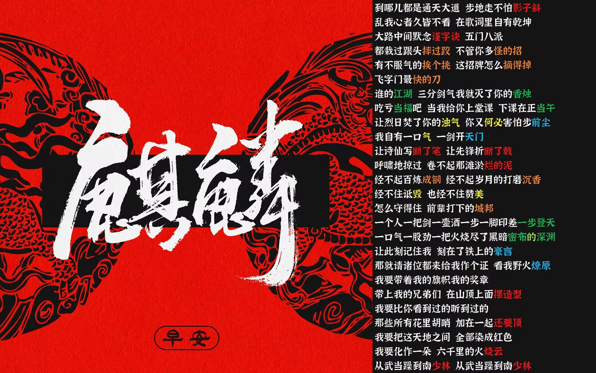

| 唱 |
喜欢听歌（邓紫棋！队长！薛之谦！宋雨琦！） |
|---|
见到篮球架就有跳跳的冲动。如今我已恢复九成功力，适当热身就能摸框。还在练弹跳中，争取大学扣一次篮。 回想高一，第一次看到运动会项目中有三级跳远一项，喜欢新鲜事的我毫不犹豫选择了它。回家就开始看视频学起来。一点一滴，从狼狈地跳进坑，到轻松熟练。可终究是自己乱练出来的，膝盖也在自己的折磨下一点一滴“耗损”。还好功夫不负有心人，在这次运动会中我三级跳拿了银牌。 到了高二上学期，运动会又临近，我再次坚定选择了它。在活动课恢复熟练度，可这次，不只是膝盖了，我的脚后跟因为鞋子的原因仿佛有了骨裂，一段时间内甚至走路都有问题，庆幸的是，在运动会期间不是很痛，也因为上届金牌得主的伤退，我凭借第一跳的11.5米便已经锁定金牌（4*100预赛和三级跳时间重合，我跳玩第一跳便去4*100了）在回来后又在第五跳刷新自己的pb，11.8米。！ 高三有点遗憾，仍然是伤病，在前一天膝盖又痛了。比赛时只能一跳了之。 （写上面文字的一周后，我的膝盖又有了阵痛，我感觉我真的快“废”了。） |
跳and篮球 |
| rap | 早安哥的《麒麟》属实是充满了我升高三的暑假。法老的说唱也是经典。 |
完了我好像触发关键词了
当然我也喜欢看番，如果感兴趣就来和我分享吧